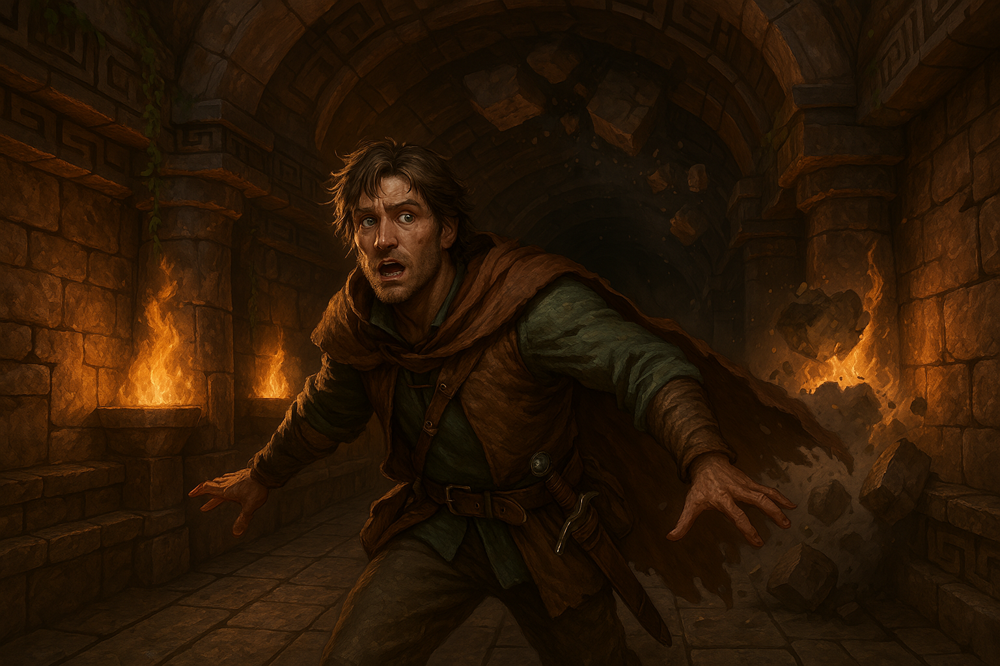
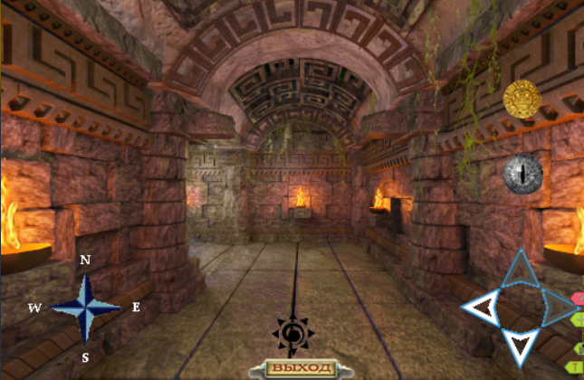
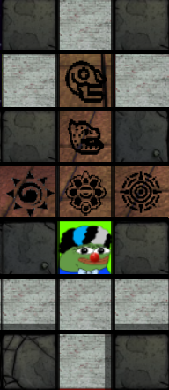

Небольшой гайд по ловушкам в храме.
Предупреждения о ловушке появляются в нижней части главного экрана при прохождении храма солнца. Они сигнализируют о наличии впереди (или сбоку) ловушки, при шаге на которую аватар получает травму (и проклятье храма, если сложность – чемпион или избранный), а также здоровье и мана снижаются до единицы.

Травмы выбираются рандомно и накладываются на 24 часа. Проклятья храма накладываются на 3 часа, но всегда снижают здоровье и ману на 10%. Эффект проклятий складывается, так что, если собрать слишком много, персонаж фактически становится небоеспособен. Для того, чтобы этого избежать, перед шагом на клетку, на которой расположена ловушка, необходимо включить режим поиска ловушек. Кнопка находится в главном фрейме справа.
Всего есть 5 типов ловушек.

На изображении показано расположение ловушки в зависимости от положения персонажа.
Например, если персонаж видит изображение ловушки, похожей на глаз, то ловушка впереди, на следующем шаге, и следует сразу включить режим поиска. Если же ловушка, например, похожа на символ солнца, то можно смело шагнуть вперед и только после этого включать режим поиска при повороте налево.
Стоит отметить, что знаки могут располагаться не только в проходах, но и в тупиках, сигнализируя о ловушке, находящейся в 2-3 клетках за стеной. Иногда знаки в тупиках частично накладываются на изображения сундука, из-за чего следует быть внимательней.
Удачных походов в храм солнца!